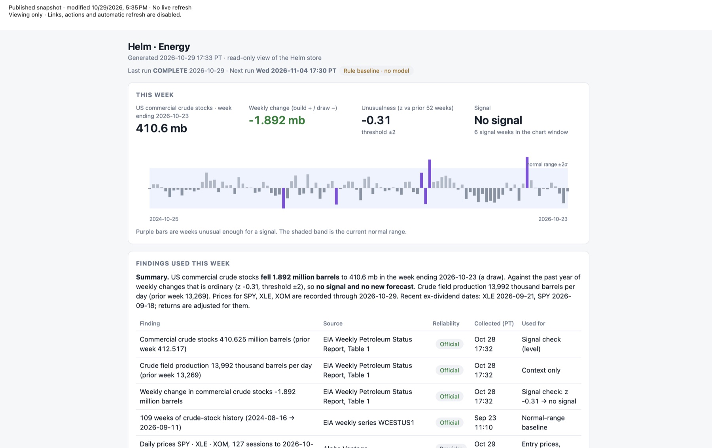

Software · Q ecosystem · Data pipeline · Forecasting lab
Helm
A locally operated forecasting lab that watches real-world data, decides whether anything is unusual enough to matter, and records every step from evidence to conclusion so it can be audited. It starts with energy: a weekly check of US crude-oil inventories. Research project; not investment advice.
Weekly report

Problem
Headlines and chatbots make confident market claims that cannot be traced to evidence. I wanted a system where every conclusion can be followed back to a named source, where "nothing unusual happened" is a valid and visible answer, and where the reasoning is stored so it can be checked later.
What I did
Specified and built Helm as a chain of explicit, stored steps: evidence, then a "Swell" (something meaningful appears to be changing), then a "Ripple" (a hypothesized downstream effect), then a quantitative "Vector" (a projection), then outcome, critique, and learning. It is deliberately not a language model reading headlines and emitting trades.
My role: I design the architecture and rules, write the specifications, approve each build step, and verify results. AI coding agents write much of the code under those rules.
How
- Blueprint-driven build: 18 module blueprints (contracts, storage and trace, local model runtime, data adapters, an Energy package, ledger, signal detection, projections, critic, orchestration, node transport, and operations) plus an acceptance harness.
- Data and sourcing: pulls official US Energy Information Administration weekly petroleum data and market prices, and tags every finding with its source, a reliability grade, and when it was collected.
- Signal rule: compares each week's change in commercial crude stocks with the prior 52 weeks as a z-score and fires only past a threshold of two standard deviations. The shaded band in the chart is the normal range and purple bars are signal weeks.
- Local-first: runs on my own machines with local models, no cloud-model dependency, and is read-only in its published view (links and actions disabled).
- Operations: a scheduled weekly run on the Brain machine, with the next run time shown on the report.
Results
- A working weekly pipeline: the latest run completed on October 29, 2026 and produced the report above, correctly concluding "no signal" for the week ending October 23 (a 1.892 million barrel draw, z = -0.31 against a ±2 threshold).
- Full traceability: each statement in the report links to an official source and a collection time.
- All 18 blueprints and the acceptance harness are built, and the offline acceptance gates pass.
- Honest current state: the signal is a rule baseline with no trained model yet. Real-world predictive value has not been established.
Research and educational only. Nothing here is investment advice.